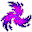

アビスへの追放 Banishment
英語版 CrawlWiki の記事「Banishment」(0.33 向け、2026-05-23 版)の翻訳です。原文の著者は編集履歴をご覧ください。
この記事は 0.33 の時点の内容で、最新の 0.34 とは違うところがあるかもしれません。
| | |
|---|---|
| 詠唱の騒音 | 4 |
| 呪文の騒音 | 0 |
| 射程 | LOS |
| フラグ | 意志力判定(Will check)、混沌(Chaotic)、方向・対象指定(Dir or target)、モンスター専用(Monster)、射線の確認が必要(Needs tracer)、不浄(Unholy) |
| モンスターをアビスへと追放する。
「忘却の大河が、我らを名もなき深淵へと押し流してゆく」 |
アビスへの追放(Banishment)は、対象をアビスへ送り込む呪文であり、能力であり、効果全般のことでもある。ダメージこそ与えないが、レベルの足りないキャラクターにとってアビスは危険な場所だ。
基本情報
プレイヤーが受けた場合
アビスへ送られる。行き先の階層はXLで決まり、XL が高いほど深い階層に飛ばされる。ただし、以前にアビスを訪れたことがあれば、少なくともそれまでに行った最も深い階層には必ず送られる。すでにアビスにいる場合は、一つ深い階層に送られる。
追放されたあとでアビスを出ると、追放される前にいた迷宮の階、パンデモニウムの階、またはジグラットの階に戻ってくる。この点がアビスへのポータルに入った場合とは違う。ポータルを使えばパンデモニウムから抜け出せるが、追放ではそうはいかない。
出口の門を通ってアビスから脱出したあとの 10〜19 ターン(decaAut)は、(歪曲によるものでも呪文によるものでも)追放を受けなくなる。[1]ただしゾムによる追放は防げない。
モンスターが受けた場合
モンスターを、その持ち物ごと追放する。普通は倒したものとして扱われるが、ユニークや一部の強力なモンスターの場合はアビスをうろついているのに出くわすことがある。また、アビスに消えたアーティファクトは、いずれアビスの中に生成される。経験値はそのモンスターを倒したときと同じだけ入るが、信仰心の計算では倒したことにならない。
原因
プレイヤーが追放されるのは次の場合だ。
ルゴヌは信者にアビスへの追放の能力を授ける。働きはモンスターの呪文と同じだが、相手が意志力判定に抵抗したときには悪性変異の状態を与える。また、ほかの神の神罰が下るたびに、ルゴヌが周りのモンスターを追放してくれる。
追放を使ってくるモンスターの一覧は下にある。
戦略
レベルの低いキャラクターにとって追放はきわめて危険だ。XL 9 で太古のリッチと鉢合わせ、などということにもなりかねない。アビスで生き延びられるようになるのは、だいたい XL 15〜20 あたりからだ。XL 27 のキャラクターならアビス第3階層は問題ないはずだが、アビス第6〜7階層ではまだ苦戦することがある。
序盤で追放されても、まだ諦めることはない。(祭壇が見つかれば)ルゴヌに入信すれば、すぐに脱出できる。それまでの神から懺悔を課されることになるが、ルゴヌがある程度は守ってくれる。そうでなくても、経験値を稼いでいけばいずれ出口が現れるし、歩き回っていれば出口が見つかることもある。
基本的には、追放されてから対処するより、追放されないようにするほうがいい。避け方は原因によって変わる。
- 歪曲の攻撃は、その敵と近接戦闘をしないことで避けられる。遠隔攻撃を使うのは言うまでもない。ワンドならほぼどのキャラクターでも使える。敵が歪曲の武器を持っているなら、ツキマーの舞踏で武器を奪ってしまう手もある。
- 呪文の「アビスへの追放」は意志力で抵抗できる。たいていは Will+++ あれば足りる(追放される確率は 0〜1% 程度になることが多い)。Will++++ あれば、どの術者の呪文も完全に効かなくなる。ほかにも、射線をふさぐ(敵でも味方でもいいので、ほかのモンスターの後ろに立つ)、視界を切る、術者を静寂や浸水の状態にする、といった手がある。
- 状況によっては、一時的に追放を受けなくなることがある。たとえばオカワルは、闘技場で戦っている間は追放を防いでくれる。同じようにベオも、挑戦の最中には追放させない。
モンスター
呪文
アビスへの追放はモンスター専用の呪文だ。対象まで射線が通っている必要があり、さらに対象の意志力を上回らなければならない。視界内ならどれだけ離れていても使える。術者の HD が高いほど成功しやすく、より深い階層に送られやすい。
アビスへの追放を唱える敵は次のとおり。
歪曲
以下のモンスターは歪曲の武器を持って生成されることがあるか、生まれつき歪曲の攻撃を持っている。歪曲の武器が命中すると、5% の確率で追放が起きる。
@  プシュケ (25%)
プシュケ (25%)
K  ソーニャ (50%)
ソーニャ (50%)
@  ドナルド (4%)
ドナルド (4%)
@  フレデリック (4%)
フレデリック (4%)
@  マージェリー (4%)
マージェリー (4%)
p  地獄の騎士 (4%)
地獄の騎士 (4%)
i  スプリガンの守り手 (10%)
スプリガンの守り手 (10%)
i  女呪術師 (25%)
女呪術師 (25%)
以下のモンスターは生まれつき歪曲の近接攻撃を持っている。名前の横にアスタリスク(*)があるものは、ふつうはアビスの中でしか出会わない。
v 
v  時空の大渦 *
時空の大渦 *
P  星の花 * (3マス先まで届く間合いもある)
星の花 * (3マス先まで届く間合いもある)
&  パンデモニウムの君主 (10%)
パンデモニウムの君主 (10%)
(  宙を舞う武器 (歪曲の武器の場合)
宙を舞う武器 (歪曲の武器の場合)

なお、武器を扱えるモンスターなら、どれでも歪曲の武器を拾って使うことがある。そのため、ごくまれにではあるが、ゴブリンのような弱いモンスターにさえ追放されることがある。
変更履歴
- 0.31 より前は、混沌の武器の効果の一つに歪曲があった。つまり、混沌の武器が命中すると、ごくわずかな確率で相手を追放することがあった。
- 0.29 より前は、追放されたモンスターはプレイヤーを追って深い階層に現れることはなく、アビス第1階層にしか出なかった。
- 0.27 より前は、リッチなど、もっと多くのモンスターが呪文セットの一つにアビスへの追放を持っていた。
- 0.26 より前は、追放したときの経験値は満額ではなかった。また、歪曲の武器が相手を追放する確率は 5% ではなく 10% だった。ネメレクスの信者は、放浪のカードを引いて自分が追放されることがあった。
- 0.25 より前は、ゾットの罠や、転位術や召喚術の重い呪文失敗の効果でも追放されることがあった。
- 0.19 より前は、オーガの魔術師がみなアビスへの追放を唱えられた。また、当時はゾムのカードがあり、これでプレイヤーが追放されることもあった。
- 0.18 より前は、追放されてもアビス第1階層にしか送られなかった。追放先の深さも、追放した者の HD には左右されなかった。
- 0.13 より前は、ドラコニアンの移相者も追放を使ってきた。また、一時的な歪曲のブランドを武器鋭化の巻物で恒久化しようとすると、追放されることもあった。
- 0.12 より前は、アビスにいるときに追放されても何も起きなかった。
- 0.11 より前は、自分で自分を追放すると(アビスを出たあと)ジグラットから出てしまっていた。
- 0.9 より前は、地獄の神秘の力がもたらす結果の一つに追放があった。
- 0.8 より前は、プレイヤーが使えるこの呪文もあった。抵抗の判定があり、一体の対象をアビスへ送るもので、レベル 4 の転位術の呪文だった。また、ルゴヌ、マクレブ、ヴェフメットを棄教すると、その場で追放されることがあった。
出典
- ↑ stairs.cc:862 (0.33.0)